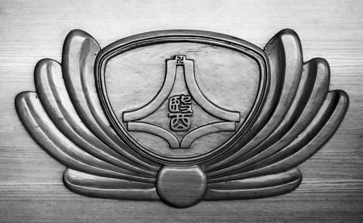
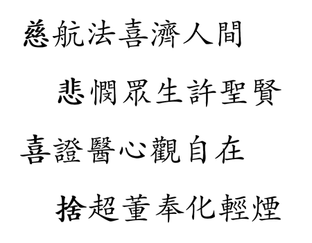

慈濟大學醫學系系學會歷史沿革
七星潭的風滾過灘上渾圓飽滿的鵝卵石
海岸山脈和中央山脈捧出一片蒼翠遼闊
山，海，星，月
故事就從這裡開始
後山的人們
始終在期盼
盼那麼一個病苦時能就近獲得妥善醫療的機會
終於慈濟醫院拔地而起
只是醫護人員呢？
海岸山脈和中央山脈捧出一片蒼翠遼闊
山，海，星，月
故事就從這裡開始
後山的人們
始終在期盼
盼那麼一個病苦時能就近獲得妥善醫療的機會
終於慈濟醫院拔地而起
只是醫護人員呢？
Med97 李垂樫 攝
序章，邂逅，萌芽心
民國八十三年（1994），證嚴法師本著「無緣大慈，同體大悲」之精神，以「慈悲喜捨」為期許，創辦慈濟醫學院（2000年改制慈濟大學），每屆招生一班50人。民國八十五年（1996）4月17日，慈濟醫學系系學會正式成立。
證嚴法師在慈濟醫院醫療志業成立之初，即有興辦醫學教育的理想，並以培養術德兼修之良醫為目標。醫術，有專業課程，人文素養呢？理論，終需有實踐體驗之過程，這群被期許成為「大醫王」的醫學生，系學會，正是絕佳的學習舞台。
證嚴法師在慈濟醫院醫療志業成立之初，即有興辦醫學教育的理想，並以培養術德兼修之良醫為目標。醫術，有專業課程，人文素養呢？理論，終需有實踐體驗之過程，這群被期許成為「大醫王」的醫學生，系學會，正是絕佳的學習舞台。
Med95 廖家麟 攝


文韜，武略，系學會
除了課業上的事務，系學會有定期的年度鉅獻和不定期的大小活動，不僅配合台灣醫學生聯合會成立國事部，也有慈醫學生的創意發想。
年度鉅獻上半年有系聯歡之夜，下半年則是送舊晚會；活動更橫跨多種領域，深度廣度兼具：文從學術研討到生活美學、趣味挑戰到攝影製片，武有「小醫盃」系上體育競賽。每年寒、暑假更有見晴醫療服務隊出隊和全國高中生醫學營；系刊「白燈塔」一筆一畫記錄系上點滴。
透過系學會，系胞們聯絡彼此的感情，充實學識涵養，也共同努力發揚慈醫之美。
年度鉅獻上半年有系聯歡之夜，下半年則是送舊晚會；活動更橫跨多種領域，深度廣度兼具：文從學術研討到生活美學、趣味挑戰到攝影製片，武有「小醫盃」系上體育競賽。每年寒、暑假更有見晴醫療服務隊出隊和全國高中生醫學營；系刊「白燈塔」一筆一畫記錄系上點滴。
透過系學會，系胞們聯絡彼此的感情，充實學識涵養，也共同努力發揚慈醫之美。
Med100 張愷杰 攝
活力，青春，我要成為大醫王
醫術，如山，堅實謙沖日益精進
醫德，如海，深邃遼闊高風亮節
醫者，如星，多面向的視野，處處閃耀動人光輝
醫心，如月，晶瑩溫潤，始終默默守護，點亮每個人
系學會引領全系，努力邁向目標──大醫王，徜徉在山海星月下，
這群醫學生們究竟會有什麼精采表現呢？
故事才剛開始，且讓我們一同期待汗水與淚光交織出的青春詩篇吧！
醫德，如海，深邃遼闊高風亮節
醫者，如星，多面向的視野，處處閃耀動人光輝
醫心，如月，晶瑩溫潤，始終默默守護，點亮每個人
系學會引領全系，努力邁向目標──大醫王，徜徉在山海星月下，
這群醫學生們究竟會有什麼精采表現呢？
故事才剛開始，且讓我們一同期待汗水與淚光交織出的青春詩篇吧！

To be continued...